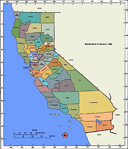
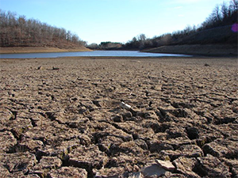
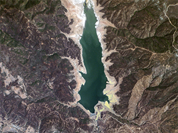

Historic Drought Drains a Thirsty California
A historic has broken records across the western U.S. For a long time, there has been very little rain. The thirsty area now includes a dozen states, from southern Texas to the northern
That land produces a third of the . It produces half of its fruit, vegetables, and wheat. Prices for those products have gone up. California has been hurt the most. There have been no winter rains for three years. Nearly 60 percent of the state is at the highest level of drought. And weather experts say there is no hope that will change very soon.
California droughts are not new. They happen every 10 or 20 years. Before modern history, some of them lasted much longer. Experts say there were droughts that lasted 50 years. But that was before millions of people lived on the coast. It was before the state's Central Valley grew much of the nation's food.
It is now the worst drought in recorded history. A University of California study says it has led to the "greatest water loss ever seen" for the state's farmland.
But farmers did not really need a study to tell them that. There is no snow on the tops of the Sierra Nevada mountains. Melting winter snow normally provides much of the water that flows into reservoirs that collect and store water. But there is not enough to release into the canals that carry it to the fields.
This year, farmers used wells to get underground water. These stores of water are called aquifers. Now the wells are starting to go dry. Some farmers are waiting six to eight months for drilling companies to dig new ones. In some areas, the aquifers are being used so quickly that the land is sinking. It looks like a bowl of cereal after the milk has been taken out.
The University of California study said the state's aquifers could soon be empty if pumping continues. One of its authors is Richard Howitt. He said the problem is like a "slow-moving train wreck." Damage to the aquifers is serious. Rain or melted snow can fill an empty reservoir in a few years. But it would take decades to fill water storage underground.
Farms use 41 percent of the state's water. City water systems use only 9 percent. Some farmers got 75 percent of their normal amount this year. Some got nothing at all. They blame laws that save large amounts of water for the environment. They also blame policies that allow cities to grow in very dry areas.
Experts and lawmakers are trying to find solutions. One of them might be new reservoirs or other types of water storage. But one thing is clear: There is just not enough water for everybody. All sides will have to work with less.